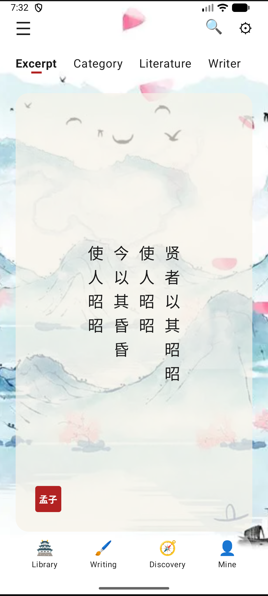
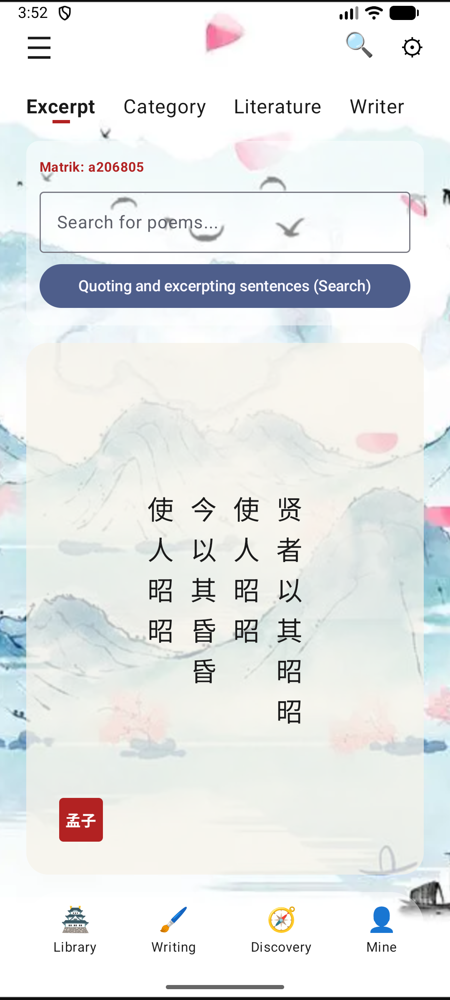
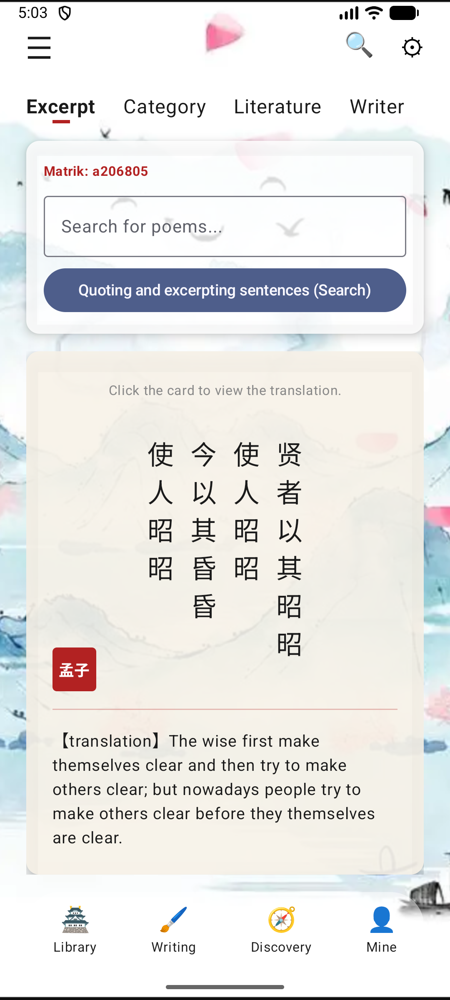
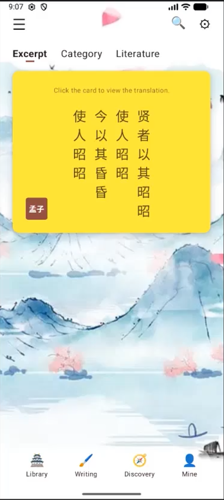
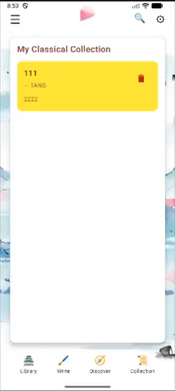

Name: Xu Youyang
Matric No.: A206805
Programme: 2AKIT1
Instructor: Cikgu Izwan
To master modern Android development using Jetpack Compose and confidently build connected, persistent, and hardware-aware mobile applications.
SDG 4: Quality Education
Statement: Empowering students through accessible classical literature tools and building a connected, global knowledge-sharing community.

Reflection: Transitioning to Jetpack Compose was initially challenging, as thinking in terms of composable functions required a mental shift from traditional layout systems. Through this lab, I learned how to effectively use layout components such as Column, Row, and Box to structure the interface vertically, horizontally, and by stacking elements. This allowed me to successfully design a static, foundational UI for the application. For academic integrity, I completed the layout structure manually without AI assistance to fully understand how Compose layouts behave.

Reflection: Managing state was initially confusing, particularly understanding how variables trigger the UI to update. However, implementing TextField and Button components taught me how responsive components update dynamically based on user actions. I learned how to use `remember` and `mutableStateOf` to manage the state of user inputs, ensuring that when a user types, Compose knows it needs to recompose and update the screen. I authored the state logic independently to cement my understanding of these core interactions.

Reflection: Applying Material Design principles significantly improved the application by shifting it from a basic layout to a visually consistent and professional interface. I utilized the official Material 3 Theme Builder to generate an industry-standard, harmonious color palette. I successfully integrated these new color and theme files into the project, ensuring all UI components inherited the updated standards. By wrapping data lists and input forms inside Card composables, the user experience became much more polished.

Reflection: Extending the application beyond a single screen context was a major technical milestone. I learned how to define clear routes and handle smooth, structured transitions between multiple screens using the NavController. Furthermore, integrating a ViewModel provided a crucial persistent data layer that safely stores and manages UI-related data even during configuration changes. Creating a data class to model information and linking it to the ViewModel solved previous issues where data would be lost during screen transitions.

Reflection: Integrating the Room Database taught me the critical difference between temporary UI state managed by a ViewModel and true local data persistence. Building the architecture required understanding how the Entity acts as a database table, how the DAO executes operations, and how the Repository pattern sits between the ViewModel and the DAO. The most rewarding part was seeing data successfully stored in the Database Inspector and proving that it exists even after the application is completely closed and reopened.
Problem Statement: Students studying classical literature often lack an interactive, easy-to-navigate digital environment, leading to a disconnected and unengaging learning experience.
Features: 5-screen navigation, basic UI/UX, static literature library presentation, shared state via ViewModel.
Project 1 VSR (YouTube) GitHub Repository
Lessons Learned: Building this complete 5-screen application reinforced the necessity of centralized state management. The most important lesson was ensuring that the ViewModel successfully shares dynamic data across different screens. I learned how to architect the application so that a user could add an item on a form input screen and immediately see that data accurately displayed on a separate summary list screen.
Problem Statement: While Project 1 provided static learning, real education requires inspiration, data persistence, and global community sharing to fully address SDG 4 (Quality Education).
Technical Pillars Implemented:
Growth & Challenges: My growth from building basic static layouts in Lab 1 to engineering a fully connected application in Project 2 has been immense. The most significant challenge was successfully implementing and orchestrating the four technical pillars simultaneously. It required careful thread management (Dispatchers.IO) to connect to a free public REST API via Retrofit to fetch dynamic data, trigger that request using a mobile hardware accelerometer sensor, persist the fetched data locally using a Room Database, and push community data remotely to Firebase Firestore without blocking the main UI thread.
SDG Impact: This application directly addresses my chosen Sustainable Development Goal (Quality Education) by moving beyond static information to create a fully connected learning environment. By utilizing cloud integration to backup and share data remotely, and local persistence for offline accessibility, the application provides a persistent, interactive tool that practically supports the SDG's objectives through real-time global community engagement.